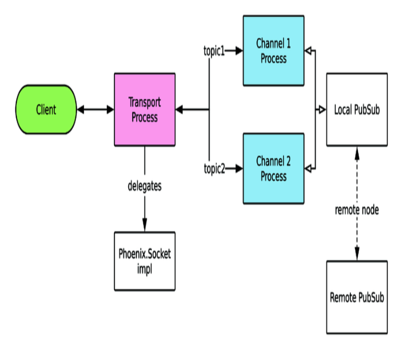

Phoenix Channels 是我们的实时应用的核心。
channels工作在一个高层抽象，让客户端连接的web server，并订阅各种topic。客户端发送和接收订阅的topics上的消息。一个连接可以订阅多个topic，不需要创建昂贵的多个连接。
从Client的视角：
从 Server的视角：

职责：连接的处理，路由。确定连接的安全验证，用户id标识，定义及route topic。
一般使用 Phoenix.Socket， 如果特殊情况需要定制实现不同的传输方式，可以实现自己的 Phoenix.Socket.Transport。
要实现的回调函数：
hello_sockets/lib/hello_sockets_web/channels/user_socket.ex
use Phoenix.Socket
## Channels
channel "ping", HelloSocketsWeb.PingChannel
channel 宏定义一个topic，并route到一个指定的 Channel 实现module。
放置业务逻辑，应用的请求处理代码。职责：
Channel类似 MVC里的Controller。Socket模块类似 Router。
skinny controllers 设计，尽量让应用逻辑放在应用的内核里，而不是在 Channel里实现。与实时连接相关的逻辑，放在这里。
Channel 就是在GenServer上做的一层包装，因此可以处理GenServer的各个回调函数。
callback函数：
示例代码：
defmodule HelloSocketsWeb.PingChannel do
use Phoenix.Channel
def join(_topic, _payload, socket) do
{:ok, socket}
end
def handle_in("ping", _payload, socket) do
{:reply, {:ok, %{ping: "pong"}}, socket}
end
end
join/3 用于加入认证。
handle_in 处理事件，参数：event,payload, 当前socket的状态。收到消息后，可以：
用 wscat 可以在命令行实验
sudo npm install -g wscat
wscat -c 'ws://localhost:5000/socket/websocket?vsn=2.0.0'
Connected (press CTRL+C to quit)
> ["1","1","ping","phx_join",{}]
< ["1","1","ping","phx_reply",{"response":{},"status":"ok"}]
> ["1","2","ping","ping",{}]
< ["1","2","ping","phx_reply",{"response":{"ping":"pong"},"status":"ok"}]
> ["1","2","ping","ping2",{}]
< ["1","1","ping","phx_error",{}]
## 这时服务端上，PingChannel进程终止，并被重启
> ["1","2","ping","ping",{}]
< [null,"2","ping","phx_reply",{"response":{"reason":"unmatched topic"},"status":"error"}]
> ["1","1","ping","phx_join",{}]
< ["1","1","ping","phx_reply",{"response":{},"status":"ok"}]
> ["1","2","ping","ping",{}]
< ["1","2","ping","phx_reply",{"response":{"ping":"pong"},"status":"ok"}]
与传统Web controller不同的是，Channel是常驻的。现实中会遇到bug以及网络断开等，进程会crash。
在上面的例子里client发出未定义的消息，channel进程会crash，然后重启，这是client需要重新join。官方的JavaScript客户端已经处理了这种情况。
channel重启了，但是客户的connection并没有断，客户如果join了其他的channel，其他channel也不会受到影响。
Channel可以自动休眠，减少内存占用。设置Channel的休眠时间（默认15秒）
use Phoenix.Channel, hibernate_after: 60_000
topic 是一个string，习惯上用 "topic:subtopic" 格式。因为 channel/3 可以使用通配符。
channel "ping", HelloSocketsWeb.PingChannel
channel "ping:*", HelloSocketsWeb.PingChannel
channel "wild:*", HelloSocketsWeb.WildcardChannel
在Channel的实现模块里，通过join/3 回调可以自定义topic名称通配符的判断规则：
defmodule HelloSocketsWeb.WildcardChannel do
use Phoenix.Channel
def join("wild:" <> numbers, _payload, socket) do
if numbers_correct?(numbers) do
{:ok, socket}
else
{:error, %{}} end
end
def handle_in("ping", _payload, socket) do
{:reply, {:ok, %{ping: "pong"}}, socket}
end
defp numbers_correct?(numbers) do
numbers
|> String.split(":")
|> Enum.map(&String.to_integer/1)
|> case do
[a, b] when b == a * 2 -> true
_ -> false
end
end
end
上面的代码里，如果 client join发过来的是 wild:1:2 就join 成功，如果不是 wild:[Int]:[Int]这样的格式 Channel进程就会崩溃重启，但至少阻止了不合法的连接。
读源代码， lib/phoenix/socket.ex ，用的macro，在编译时将名称字符串生成了模式匹配的源代码。这块实现类似Common Lisp了。
动态的Topic名称，可以实现特定用户，或特定群组的私有消息，如 "notifications:t-1:u-2" 这样格式，可以指明 Team 1 下的 User 2.系统可以在任意位置，向指定的用户发送消息，只要提供相应的用户id。
选择Topic名称，对扩展性很重要。例如一个提供库存更新的Channel，可以用不同的方式实现：
Phoenix.PubSub (publisher/subscriber)，实现topic订阅与消息广播。Channel在内部使用 PubSub，一般不用跟它打交道，但要理解它，才能更好的配置及确保性能及扩展性。
PubSub 在本地node 和所有连接的远程 node之间都连接。可以让PubSub在整个集群里广播消息。多个PubSub之间的通讯，PubSub内置使用pg2 adapter。另外还有一个基于 Redis的adapter，不需要node之间连接在一起。（见Chap11 部署应用）
看 pubsub的源代码，broadcast的实现，也是通过注入的 adapter 实现具体的功能。依赖注入。
broadcast例子：
iex(6)> HelloSocketsWeb.Endpoint.broadcast("ping","test", %{data: "test"})
:ok
$ wscat -c 'ws://localhost:5000/socket/websocket?vsn=2.0.0'
Connected (press CTRL+C to quit)
> ["1","1","ping","phx_join",{}]
< ["1","1","ping","phx_reply",{"response":{},"status":"ok"}]
< [null,null,"ping","test",{"data":"test"}]
Message的内容可以让客户端追踪请求和回复的流，因为单个Channel会有多个异步的请求。
defmodule Phoenix.Socket.Message do
@type t :: %Phoenix.Socket.Message{}
defstruct topic: nil, event: nil, payload: nil, ref: nil, join_ref: nil
:topic - The string topic or topic:subtopic pair namespace, for example "messages", "messages:123":event- The string event name, for example "phx_join"，Channel的实现可以用模式匹配来处理不同的event。:payload - The message payload， JSON map:ref - The unique string ref，发送消息时递增数字:join_ref - The unique string ref when joining，join到topic时递增的数字官方的 Channel客户端库，在发送请求时，给出 join_ref, ref, topic，服务端返回消息时，带有相同的 join_ref,ref,topic，这样客户端就可以方便的组织消息的处理。
客户端的消息通过Socket，路由到相应的 Channel，通过 handle_in/3 回调处理。这样可以用一个Socket连接多个Channel，并依然保持高性能。
见 socket.ex 下， handle_in 方法的实现。
可以对event名字，和 payload 内容的匹配：
def handle_in("ping", %{"ack_phrase" => ack_phrase}, socket) do
{:reply, {:ok, %{ping: ack_phrase}}, socket}
end
def handle_in("ping", _payload, socket) do
{:reply, {:ok, %{ping: "pong"}}, socket}
end
def handle_in("ping_" <> phrase, _payload, socket) do
{:reply, {:ok, %{ping: phrase}}, socket}
end
$ wscat -c 'ws://localhost:5000/socket/websocket?vsn=2.0.0'
Connected (press CTRL+C to quit)
> ["1","1","ping","phx_join",{}]
< ["1","1","ping","phx_reply",{"response":{},"status":"ok"}]
> ["1","2","ping","ping",{}]
< ["1","2","ping","phx_reply",{"response":{"ping":"pong"},"status":"ok"}]
> ["1","3","ping","ping_hello",{}]
< ["1","3","ping","phx_reply",{"response":{"ping":"hello"},"status":"ok"}]
> ["1","4","ping","ping",{"phrase":"good"}]
< ["1","4","ping","phx_reply",{"response":{"ping":"pong"},"status":"ok"}]
> ["1","5","ping","ping",{"ack_phrase":"good"}]
< ["1","5","ping","phx_reply",{"response":{"ping":"good"},"status":"ok"}]
Tips：
def handle_in("pong", _payload, socket) do # We only handle ping
{:noreply, socket}
end
def handle_in("ding", _payload, socket) do
{:stop, :shutdown, {:ok, %{msg: "shutting down"}}, socket}
end
不需要在Channel里写 handler代码，把消息发送给topic，就可以给连接到topic的client发送消息。我们可以通过intercept发出的消息，来定制这个行为。
defmodule HelloSocketsWeb.PingChannel do
use Phoenix.Channel
intercept ["request_ping"]
# ...
def handle_out("request_ping", payload, socket) do
push(socket, "sned_ping", Map.put(payload, "from_node", Node.self()))
{:noreply, socket}
end
end
运行：
iex(6)> HelloSocketsWeb.Endpoint.broadcast("ping", "request_ping", %{})
:ok
$ wscat -c 'ws://localhost:5000/socket/websocket?vsn=2.0.0'
Connected (press CTRL+C to quit)
> ["1","1","ping","phx_join",{}]
< ["1","1","ping","phx_reply",{"response":{},"status":"ok"}]
< [null,null,"ping","sned_ping",{"from_node":"nonode@nohost"}]
Tips：
客户端的职责
在socket.js 中，创建socket，channel，join。
import {Socket} from "phoenix"
let socket = new Socket("/socket", {params: {token: window.userToken}})
socket.connect()
let channel = socket.channel("ping")
channel.join()
.receive("ok", resp => { console.log("Joined ping successfully", resp) })
.receive("error", resp => { console.log("Unable to join ping", resp) })
console.log("send ping")
channel.push("ping")
.receive("ok", (resp) => console.log("receive:", resp.ping))
export default socket
客户端在join一个topic之前，发送的消息先缓存在客户端内存里，一旦连接上就发送。缓存是一个5秒的短生命期缓存。应对连接不稳定的问题。
服务端Channel可以随时给连接的客户端发送消息，不只是回复进入的消息。客户端通过 channel.on 注册特定event 的处理函数，这需要 event name 已知，可以将动态的内容放在 payload里。
channel.on("send_ping", (payload) => {
console.log("ping requested", payload)
})
$ iex -S mix phx.server
iex(1)> HelloSocketsWeb.Endpoint.broadcast("ping", "request_ping", %{})
:ok